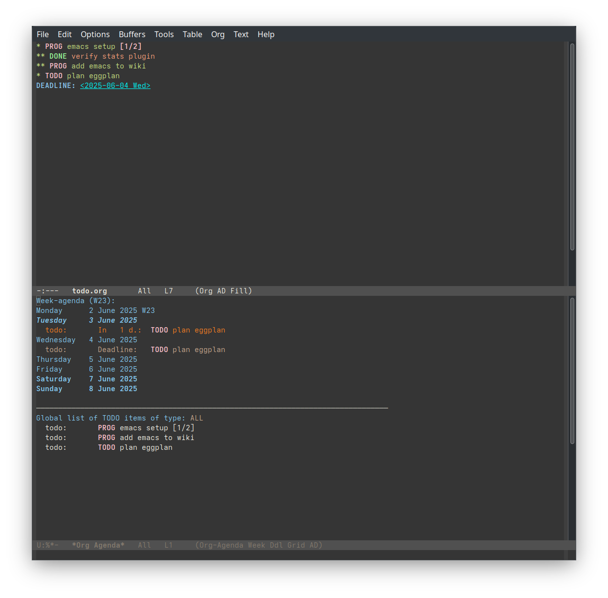

emacs配置
直接上配置文件~/.emacs.d/init.el：
实现的主要有
- 启动时窗口大小和位置
- 启动时自动开上下分屏，一个显示TODO，一个显示当天日程
- 用org-mode实现项目管理，直接抄了一个带点自动化的。感觉可以有很多作
业可以抄，还在研究中。org-mode其实在工作上用的更多，毕竟需要多线程，
记录deadline。个人电脑上没有啥是必须做的，就是把项目要做的列出来比
较方便看进度而已。功能包括：
- 利用快捷键和自动更新来方便的管理TODO->DONE的切换。子项目有进度改变 的时候，总项目的进度会自动更新
- 做完的项目可以用快捷键扔到一个archive文件里。日后浏览这个文件可以追 溯之前都干了啥。
- 字体是Hack，主题是dracula
需要额外手动操作的部分：缺失的包裹用M-x package-install装，输入包裹名 字可以自动补全。如果无法读取init.el，看看根文件目录有没有冲突的旧 版.eamcs配置文件。
;; Disable GUI
(tool-bar-mode -1)
(menu-bar-mode -1)
(setq use-dialog-box t)
(setq use-file-dialog nil)
(setq-default frame-title-format '("%b - GNU Emacs"))
;; Hide the startup screen
(setq inhibit-startup-screen t)
(setq completion-ignore-case t)
(setq case-fold-search t)
(set-frame-font "Hack 14")
(add-hook 'text-mode-hook 'turn-on-auto-fill)
;; case insensitive search
(setq read-file-name-completion-ignore-case t
read-buffer-completion-ignore-case t
completion-ignore-case t
completion-category-defaults nil
completion-category-overrides nil
completion-styles '(basic))
(load-theme 'solarized-dark t)
;;dark mode
(set-variable 'frame-background-mode 'dark)
;;(custom-set-variables
;; custom-set-variables was added by Custom.
;; If you edit it by hand, you could mess it up, so be careful.
;; Your init file should contain only one such instance.
;; If there is more than one, they won't work right.
;;'(package-selected-packages '(emacs-color-theme-solarized standard-themes)))
;;(custom-set-faces
;; custom-set-faces was added by Custom.
;; If you edit it by hand, you could mess it up, so be careful.
;; Your init file should contain only one such instance.
;; If there is more than one, they won't work right.
;;)
(add-to-list 'load-path "~/.emacs.d/auto-dark/")
(require 'auto-dark)
(auto-dark-mode)
(require 'package)
(add-to-list 'package-archives
'("melpa-stable" . "https://stable.melpa.org/packages/"))
(package-initialize)
(custom-set-variables
;; custom-set-variables was added by Custom.
;; If you edit it by hand, you could mess it up, so be careful.
;; Your init file should contain only one such instance.
;; If there is more than one, they won't work right.
'(package-selected-packages
'(dracula-theme emacs-color-theme-solarized markdown-mode org-modern
standard-themes tangotango-theme)))
(custom-set-faces
;; custom-set-faces was added by Custom.
;; If you edit it by hand, you could mess it up, so be careful.
;; Your init file should contain only one such instance.
;; If there is more than one, they won't work right.
)
(set-frame-parameter nil 'alpha-background 90)
(add-to-list 'default-frame-alist '(alpha-background . 90))
;;from https://christiantietze.de/posts/2021/02/emacs-org-todo-doing-done-checkbox-cycling/
(setq org-agenda-files '("~/org"))
(setq org-todo-keywords
(quote ((sequence "TODO(t)" "PROG(p)" "|" "DONE(d)"))))
(defun org-todo-if-needed (state)
"Change header state to STATE unless the current item is in STATE already."
(unless (string-equal (org-get-todo-state) state)
(org-todo state)))
(defun ct/org-summary-todo-cookie (n-done n-not-done)
"Switch header state to DONE when all subentries are DONE, to TODO when none are DONE, and to DOING otherwise"
(let (org-log-done org-log-states) ; turn off logging
(org-todo-if-needed (cond ((= n-done 0)
"TODO")
((= n-not-done 0)
"DONE")
(t
"PROG")))))
(add-hook 'org-after-todo-statistics-hook #'ct/org-summary-todo-cookie)
(defun ct/org-summary-checkbox-cookie ()
"Switch header state to DONE when all checkboxes are ticked, to TODO when none are ticked, and to DOING otherwise"
(let (beg end)
(unless (not (org-get-todo-state))
(save-excursion
(org-back-to-heading t)
(setq beg (point))
(end-of-line)
(setq end (point))
(goto-char beg)
;; Regex group 1: %-based cookie
;; Regex group 2 and 3: x/y cookie
(if (re-search-forward "\\[\\([0-9]*%\\)\\]\\|\\[\\([0-9]*\\)/\\([0-9]*\\)\\]"
end t)
(if (match-end 1)
;; [xx%] cookie support
(cond ((equal (match-string 1) "100%")
(org-todo-if-needed "DONE"))
((equal (match-string 1) "0%")
(org-todo-if-needed "TODO"))
(t
(org-todo-if-needed "PROG")))
;; [x/y] cookie support
(if (> (match-end 2) (match-beginning 2)) ; = if not empty
(cond ((equal (match-string 2) (match-string 3))
(org-todo-if-needed "DONE"))
((or (equal (string-trim (match-string 2)) "")
(equal (match-string 2) "0"))
(org-todo-if-needed "TODO"))
(t
(org-todo-if-needed "PROG")))
(org-todo-if-needed "PROG"))))))))
(add-hook 'org-checkbox-statistics-hook #'ct/org-summary-checkbox-cookie)
;;show agenda at startup
(add-hook 'serve-after-make-frame-hook 'org-agenda-list)
(defun emacs-startup-screen ()
"display agenda and all todos"
(org-agenda nil "n"))
(add-hook 'emacs-startup-hook #'emacs-startup-screen)
;;open todo file at startup
(find-file "~/org/todo.org")
;; change initial height
;; update for different monitor set up
(setq initial-frame-alist
(append initial-frame-alist
'(
(height . 90)
(width . 120)
(left . 900)
)))
;;https://brunoarine.com/blog/refresh-agenda-on-file-change/
(defun my/redo-all-agenda-buffers ()
(interactive)
(dolist (buffer (buffer-list))
(when (derived-mode-p 'org-agenda-mode)
(org-agenda-maybe-redo))))
(add-hook 'org-mode-hook
(lambda ()
(add-hook 'after-save-hook 'my/redo-all-agenda-buffers nil 'make-it-local)))
略微滞后的最终效果，没有更新截图
